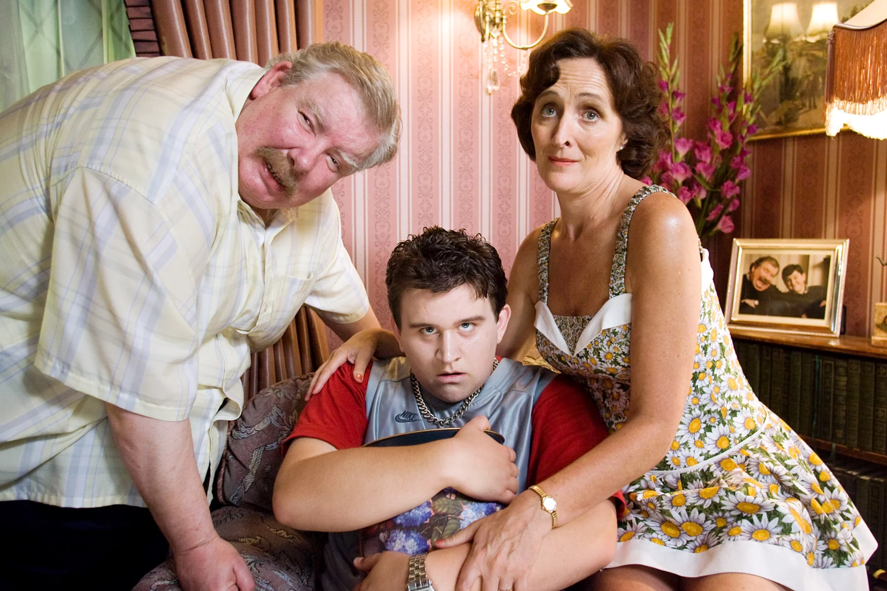

asasas: {{
Harry Potter e la pietra filosofale -- il mio trascrizione
Capitolo 1: Il bambino che è sopravvissuto
Il signore e la signora Dursley, di Privet Drive numero 4, erano orgogliosi di affermare di essere perfettamente normali, e grazie tante. Erano le ultime persone al mondo da cui aspettarsi cose strane o misteriose, perché sciocchezze del genere proprio non le approvavano.
Il signor Dursley era direttore di una ditta di nome Grunnings, che fabbricava trapani. Era un uomo corpulento, nerboruto, quasi senza collo e con un grosso paio di baffi. La signora Dursley era magra, bionda e con un collo quasi due volte più lungo del normale, il che le tornava assai utile, dato che passava gran parte del tempo ad allungarlo oltre la siepe del giardino per spiare i vicini. I Dursley avevano un figlioletto di nome Dudley e secondo loro non esisteva al mondo un bambino più bello.
Possedevano tutto quel che si poteva desiderare, ma avevano anche un segreto, e il loro più grande timore era che qualcuno potesse scoprirlo. Non credevano di poter sopportare che qualcuno venisse a sapere dei Potter. La signora Potter era la sorella della signora Dursley, ma non si vedevano da anni. Anzi, la signora Dursley faceva addirittura finta di non avere sorelle, perché la signora Potter e quel buono a nulla del marito non avrebbero potutoessere più diversi da loro di così. I Dursley rabbrividivano al solo pensiero di quel che avrebbero detto i vicini se i Potter si fossero fatti vedere nei paraggi. Sapevano che i Potter avevano anche loro un figlio piccolo, ma non lo avevano mai visto. E questa era un’altra buona ragione per tenere i Potter a distanza: non volevano che Dudley avesse a che fare con un bambino di quel genere.
Quando i coniugi Dursley si svegliarono, la mattina di quel martedì grigio e nuvoloso in cui inizia la nostra storia, nel cielo coperto non c’era nulla che facesse presagire le cose strane e misteriose che di lì a poco sarebbero accadute in tutto il Paese. Il signor Dursley scelse canticchiando la cravatta più anonima del suo guardaroba e la signora Dursley continuò a chiacchierare ininterrottamente, mentre con grande sforzo costringeva sul seggiolone Dudley che urlava a squarciagola.
Nessuno notò il grosso gufo bruno che passò con un frullo d’ali davanti alla finestra.
Alle otto e mezzo il signor Dursley prese la sua valigetta ventiquattrore, sfiorò con le labbra la guancia della moglie e tentò di dare un bacio a Dudley, ma lo mancò perché, in quel momento, in preda a un furioso capriccio, il bambino stava scagliando i suoi cereali contro il muro. «Piccolo monello!» commentò ridendo il signor Dursley mentre usciva di casa. Salì in macchina e percorse inretromarcia il vialetto del numero 4.
Fu all’angolo della strada che notò le prime avvisaglie di qualcosa di strano: un gatto che leggeva una mappa. Per un attimo, il signor Dursley non si rese conto di quel che aveva visto; poi girò di scatto la testa e guardò di nuovo. In effetti c’era un gatto soriano all’angolo di Privet Drive, ma di mappe nemmeno l’ombra. Ma che diavolo aveva per la testa? La luce doveva avergli giocato qualche brutto tiro. Si stropicciò gli occhi e fissò il gatto, che gli ricambiò l’occhiata. Mentre l’auto girava l’angolo e percorreva un tratto di strada, il signor Dursley tenne d’occhio il gatto nello specchietto retrovisore. In quel momento il felino stava leggendo il cartello stradale che indicava Privet Drive. No, lo stava guardando; i gatti non sanno leggere le mappe e neanche i cartelli stradali. Il signor Dursley si riscosse da quei pensieri e allontanò il gatto dalla mente. Mentre si dirigeva in città, non pensò ad altro che al grosso ordine di trapani che sperava di ricevere quel giorno.
Ma una volta giunto alla periferia della città, avvenne qualcos’altro che gli fece dimenticare i trapani. Bloccato nel solito ingorgo del mattino, non poté fare a meno di notare che in giro c’erano un sacco di persone vestite in modo strano. Gente con indosso dei mantelli. Il signor Dursley non sopportava le persone che si vestivano in modo stravagante: bastava vedere come si conciavano certi giovani! Immaginò che si trattasse di qualche stupidissimanuova moda. Mentre tamburellava con le dita sul volante, lo sguardo gli cadde su un capannello di quegli strampalati, vicinissimo a lui. Si stavano bisbigliando qualcosa tutti eccitati. Il signor Dursley sentì montare la rabbia nel constatare che un paio di loro erano tutt’altro che giovani. Ma che roba! Quello lì doveva essere più anziano di lui e portava un mantello verde smeraldo! Che faccia tosta! Poi però pensò che potesse trattarsi di qualche sciocca trovata. Ma certo! Era gente che faceva una colletta per qualche motivo. Sì, doveva essere proprio così. Poi, il traffico riprese a scorrere e alcuni minuti più tardi il signor Dursley giunse al parcheggio della Grunnings con la mente di nuovo tutta presa dai trapani.
Nel suo ufficio, al nono piano, il signor Dursley sedeva sempre con la schiena rivolta alla finestra. Se così non fosse stato, quella mattina avrebbe avuto ancor più difficoltà a concentrarsi sui suoi trapani. Lui non vide i gufi volare a sciami in pieno giorno, ma la gente per strada sì. E li additavano, a bocca aperta, guardandoli passare a tutta velocità, uno dopo l’altro sopra le loro teste. La maggior parte di quelle persone non aveva mai visto un gufo neanche di notte. Ciononostante, il signor Dursley ebbe il privilegio di una mattinata perfettamente normale, del tutto immune dai gufi. Uscì dai gangheri con cinque persone diverse. Fece molte telefonate importanti e qualche altro uriaccio. Fino all’ora dipranzo, il suo umore si mantenne ottimo. A quel punto decise che, per sgranchirsi le gambe, avrebbe attraversato la strada per andare a comprarsi una ciambella dal fornaio di fronte.
Aveva completamente dimenticato le persone con il mantello fino a che non ne superò un gruppetto proprio accanto al fornaio. Mentre passava, scoccò loro un’occhiata furente. Non sapeva perché, ma lo mettevano a disagio. Anche queste bisbigliavano tutte eccitate, ma di cassette per raccogliere le offerte non ne vide neanche una. Fu passando loro accanto di ritorno dal fornaio, con un’enorme ciambella in un sacchetto, che colse qualcosa di quello che stavano dicendo.
«I Potter, proprio così, è quel che ho sentito...»
«...già, il figlio, Harry...»
Il signor Dursley si fermò di colpo. Fu invaso dalla paura. Si voltò a guardare il capannello come se volesse dire qualcosa, ma poi ci ripensò.
Attraversò la strada precipitosamente e raggiunse in tutta fretta il suo ufficio; intimò alla segretaria di non disturbarlo per nessuna ragione, afferrò il telefono, e aveva quasi finito di fare il numero di casa quando cambiò idea. Mise giù il ricevitore, si lisciò i baffi, pensando... no, era stato uno stupido. Potter non era poi un nome così insolito. Era certo che esistessero miriadi di persone che si chiamavano Potter eavevano un figlio di nome Harry. E poi, ora che ci pensava, non era neanche tanto sicuro che suo nipote si chiamasse proprio Harry. Del resto, non lo aveva neanche mai visto. Avrebbe potuto chiamarsi Harvey. O Harold. Non c’era ragione di impensierire la signora Dursley; se la prendeva tanto ogni volta che le si parlava della sorella! E non poteva darle torto: se l’avesse avuta lui, una sorella così... Tuttavia, quella gente avvolta nei mantelli...
Quel pomeriggio trovò molto più difficile concentrarsi sui suoi trapani e quando lasciò l’ufficio alle cinque in punto era ancora talmente assorto che, appena varcata la soglia del palazzo, andò a sbattere dritto dritto contro qualcuno.
«Scusi» bofonchiò, mentre il poveretto - un uomo anziano e mingherlino - inciampava e per poco non finiva lungo disteso.
Ci volle qualche secondo perché il signor Dursley si rendesse conto che l’uomo indossava un mantello viola. L’ometto però non sembrava per niente offeso dal fatto di essere stato quasi scaraventato a terra. Al contrario, un largo sorriso gli illuminò il volto e con una vocina stridula che destò l’attenzione dei passanti disse: «Non si scusi, mio caro signore, perché oggi non c’è niente che possa turbarmi! Si rallegri, perché Lei-Sa-Chi finalmente se n’è andato! Anche i Babbani come lei dovrebbero festeggiare questo felice, felicissimo giorno!»A quel punto, il vecchietto abbracciò il signor Dursley cingendolo alla vita e poi si allontanò.
Il signor Dursley rimase lì impalata. Era stato abbracciato da un perfetto sconosciuto. Poi pensò che quel tale lo aveva chiamato ‘Babbano’, qualsiasi cosa volesse dire. Era esterrefatto. Si affrettò a raggiungere la macchina e partì alla volta di casa, sperando di aver lavorato di fantasia, cosa che non aveva mai sperato prima perché non approvava le fantasie.
Non appena ebbe imboccato il vialetto del numero 4 di Privet Drive, la prima cosa che scorse — e che certo non contribuì a migliorare il suo umore - fu il gatto soriano che aveva visto la mattina. Seduto sul muro di cinta del giardino. Era assolutamente certo che fosse lo stesso: i segni intorno agli occhi erano identici.
«Sciò!» gli gridò il signor Dursley.
Il gatto non si mosse. Si limitò a fissarlo con sguardo severo. Il signor Dursley si chiese se normalmente i gatti si comportassero così. Cercando di riprendersi, entrò in casa. Era ancora deciso a non dire niente alla moglie.
L Signora Dursley aveva passato una buona giornata, in tutto e per tutto normale. A cena, gli raccontò per filo e per segno i guai che la signora Della-Porta-Accanto aveva con la figlia, e poi cheDudley aveva imparato una nuova frase: «Non volio!» Il signor Dursley cercò di comportarsi normalmente. Una volta messo a letto Dudley, se ne andò nel soggiorno appena in tempo per sentire l’ultimo telegiornale.
«E infine, da tutte le postazioni gli avvistatori di uccelli riferiscono che oggi, sull’intero territorio nazionale, i gufi hanno manifestato un comportamento molto insolito. Sebbene normalmente escano di notte a caccia di prede e ben di rado vengano avvistati di giorno, fin dall’alba sono stati segnalati centinaia di gufi che volavano in tutte le direzioni. Gli esperti non sanno spiegare perché, tutt’a un tratto, i gufi abbiano modificato il loro ritmo sonno/veglia». Lo speaker si lasciò scappare una risatina. «Molto misterioso. E ora, la parola a Jim McGuffin per le previsioni del tempo. Si prevedono altri scrosci di gufi, stanotte, Jim?»
«Francamente, Ted» rispose il meteorologo, «su questo non so dirti niente, ma quest’oggi non sono stati soltanto i gufi a comportarsi in modo strano. Gli osservatori di località distanti fra loro come il Kent, lo Yorkshire e Dundee mi hanno telefonato per informarmi che, al posto della pioggia che avevo promesso ieri, hanno avuto un diluvio di stelle cadenti. Chissà? Forse si è festeggiata in anticipo la Notte dei falò. Ma, gente, la Notte dei falò è soltanto tra una settimana! Comunque, posso assicurare che stanotte pioverà».Il signor Dursley rimase seduto in poltrona, come paralizzato. Stelle cadenti in tutta la Gran Bretagna? Gufi che volano di giorno? Gente misteriosa che si aggira dappertutto avvolta in mantelli? E quelle voci, quei bisbigli sui Potter...
La signora Dursley entrò in soggiorno portando due tazze di tè. Non c’era niente da fare: doveva dirle qualcosa. Si schiarì nervosamente la voce. «Ehm, Petunia, mia cara... non è che per caso hai sentito tua sorella, ultimamente?»
Come aveva previsto, la signora Dursley assunse un’aria esterrefatta e adirata. In fin dei conti, erano abituati a far finta che non avesse una sorella.
«No» rispose seccamente. «Perché?»
«Mah, non so... al telegiornale hanno detto cose strane» bofonchiò il signor Dursley. «Gufi... stelle cadenti... e oggi, in città, un sacco di gente strampalata...»
«E allora?» sbottò la signora Dursley. «Niente, pensavo soltanto... forse... qualcosa che avesse a che fare con... hai capito, no?... con lei e i suoi».
La signora Dursley sorseggiò il tè a labbra strette. Il signor Dursley si chiedeva intanto se avrebbe mai osato dirle di aver sentito pronunciare il nome ‘Potter’. Decise che non avrebbe osato. E invece, conil tono più naturale che gli riuscì di trovare, disse: «Il figlio... dovrebbe avere la stessa età di Dudley, giusto?»
«Credo di sì» rispose la signora Dursley, rigida come un manico di scopa.
«E com’è che si chiama? Howard, no?» «Harry! Che poi è un nome terribilmente ordinario, se proprio lo vuoi sapere».
«Eh già» disse il signor Dursley con un tuffo al cuore. «Sono proprio d’accordo».
Salirono in camera per andare a dormire senza più dire una parola sull’argomento. Mentre la moglie era in bagno, il signor Dursley si avvicinò guardingo alla finestra della camera da letto e sbirciò fuori, nel giardino. Il gatto era ancora lì. Stava scrutando Privet Drive, come se aspettasse qualcosa.
La sua fantasia galoppava troppo? Tutto questo poteva avere qualcosa a che fare con i Potter? Se sì... cioè, se veniva fuori che loro erano parenti di una coppia di... be’, non credeva proprio di poterlo sopportare.
Si misero a letto. Lei si addormentò subito, ma lui rimase lì steso, con gli occhi sbarrati, a rimuginare. L’ultimo, confortante pensiero prima di addormentarsi fu che, se anche i Potter avevano veramente qualcosa a che vedere con quellafaccenda, non era affatto detto che dovessero farsi vivi con lui e sua moglie. I Potter sapevano molto bene quel che lui e Petunia pensavano di loro e di quelli della loro risma... Non vedeva proprio come potessero venire coinvolti, di qualsiasi cosa si trattasse - e qui sbadigliò e si girò dall’altra parte - la cosa non poteva riguardarli...
Ma si sbagliava di grosso.
Se il signor Dursley era scivolato in un sonno agitato, il gatto, seduto sul muretto di fuori, non dava alcun segno di aver sonno. Sedeva immobile come una statua, con gli occhi fissi e senza batter ciglio, all’angolo opposto di Privet Drive. E non ebbe il minimo soprassalto neanche quando, nella strada accanto, la portiera di una macchina sbatté forte, né quando due gufi gli sfrecciarono sopra la testa. Dovette farsi quasi mezzanotte prima che il gatto facesse il minimo movimento.
Un uomo apparve all’angolo della strada che il gatto stava tenendo d’occhio; ma apparve così all’improvviso e silenziosamente che si sarebbe detto fosse spuntato direttamente dal terreno. La coda del gatto ebbe un guizzo e gli occhi divennero due fessure.
In Privet Drive non s’era mai visto niente di simile. Era alto, magro e molto vecchio, a giudicare dall’argento dei capelli e della barba, talmente lunghi che li teneva infilati nella cintura. Indossava unatunica, un mantello color porpora che strusciava per terra e stivali con i tacchi alti e le fibbie. Dietro gli occhiali a mezzaluna aveva occhi azzurro chiaro, luminosi e scintillanti, e il naso era molto lungo e ricurvo, come se l’avesse rotto almeno un paio di volte. L’uomo si chiamava Albus Silente.
Albus Silente non sembrava rendersi conto di essere appena arrivato in una strada dove tutto, dal suo nome ai suoi stivali, risultava sgradito. Si dava un gran da fare a rovistare sotto il mantello, in cerca di qualcosa. Sembrò invece rendersi conto di essere osservato, perché all’improvviso guardò il gatto, che lo stava ancora fissando dall’estremità opposta della strada. Per qualche ignota ragione, la vista del gatto sembrò divertirlo. Ridacchiò tra sé borbottando: «Avrei dovuto immaginarlo».
Aveva trovato quel che stava cercando nella tasca interna del mantello. Sembrava un accendino d’argento. Aprì il cappuccio, lo sollevò in aria e lo fece scattare. Il lampione più vicino si fulminò con un piccolo schiocco. L’uomo lo fece scattare di nuovo, e questa volta si fulminò il lampione appresso. Dodici volte fece funzionare quel suo ‘spegnino’, fino a che l’unica illuminazione rimasta in tutta la strada furono due capocchie di spillo in lontananza: gli occhi del gatto che lo fissavano. Se in quel momento qualcuno - perfino quell’occhio di lince del signor Dursley — avesse guardato fuori dalla finestra, non sarebbe riuscito a vedere niente di quel che stava accadendoin strada. Silente ripose nuovamente il suo spegnino nella tasca del mantello e si incamminò verso il numero 4 di Privet Drive, dove si mise a sedere sul muretto, accanto al gatto. Non lo guardò, ma dopo un attimo gli rivolse la parola.
«Che combinazione! Anche lei qui, professoressa McGonagall?»
Si voltò con un sorriso verso il soriano, ma questo era scomparso. Al suo posto, davanti a lui, c’era una donna dall’aspetto piuttosto severo, che portava un paio di occhiali squadrati di forma identica ai segni che il gatto aveva intorno agli occhi. Anche lei indossava un mantello, ma color smeraldo. I capelli neri erano raccolti in uno chignon. Aveva l’aria decisamente scombussolata.
«Come faceva a sapere che ero io?» chiese. «Perché, mia cara professoressa, non ho mai visto un gatto seduto in una posa così rigida». «Anche lei sarebbe rigido se fosse rimasto seduto tutto il giorno su un muretto di mattoni» lo rimbeccò la professoressa McGonagall.